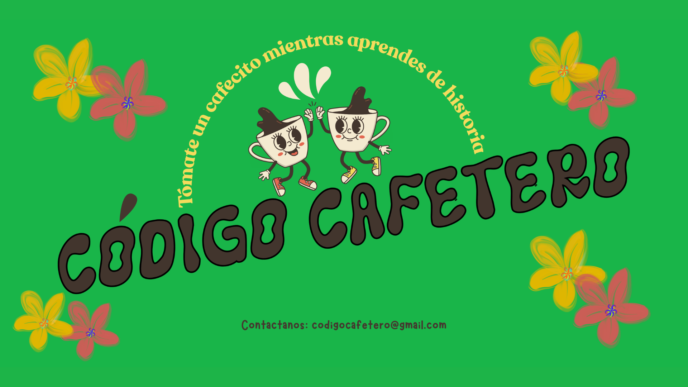

El Origen del Sabor
El sabor del café nunca es casualidad. Nace primero en la genética de la planta (variedades como Caturra, Castillo, Tabi), se nutre del terruño (los suelos volcánicos, la altura y el clima que estresan positivamente al cafeto) y se desarrolla en el cuidado del proceso. Un café cultivado en zonas altas, como muchas en Pereira, desarrollará un sabor más suave, notas frutales o florales y una acidez mucho más refinada.